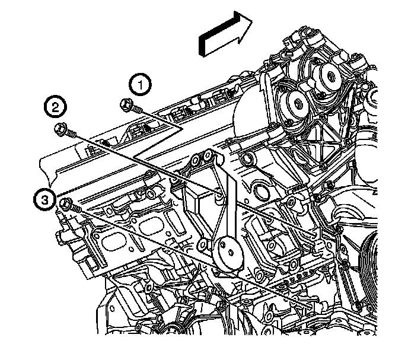

Generator Bracket Replacement
Generator Bracket Replacement (LH2 - Gas, 8 Cylinder, 4.6L, SFI, V8, DOHC, HO)
Removal Procedure

1. Disconnect the battery negative cable. Refer to Battery Negative Cable Disconnection and Connection (LHD) (Service and Repair)Battery Negative Cable Disconnection and Connection (RHD) (Service and Repair) .
2. Remove the generator. Refer to Generator Replacement (LY7 - Gas, 6 Cylinder, 3.6L, SFI, V6) (Generator Replacement)Generator Replacement (LH2 (AWD)) (Generator Replacement)Generator Replacement (LH2 (RWD)) (Generator Replacement) .
3. Remove the generator drive belt tensioner. Refer to Drive Belt Tensioner Replacement - Generator (Drive Belt Tensioner Replacement - Generator) .
4. Remove the right side engine mount bracket. Refer to Engine Mount Bracket Replacement - Right Side (w/RWD) (Service and Repair)Engine Mount Bracket Replacement - Right Side (w/AWD) (Service and Repair) .
5. Remove the generator bracket bolts.
6. Remove the generator bracket from the engine.
Installation Procedure
1. Install the generator bracket to the engine.
Notice: Refer to Fastener Notice (Fastener Notice) .
2. Install the generator bracket bolts.
Tighten the bolts in the sequence shown to 50 N.m (37 lb ft).
3. Install the right side engine mount bracket. Refer to Engine Mount Bracket Replacement - Right Side (w/RWD) (Service and Repair)Engine Mount Bracket Replacement - Right Side (w/AWD) (Service and Repair) .
4. Install the generator drive belt tensioner. Refer to Drive Belt Tensioner Replacement - Generator (Drive Belt Tensioner Replacement - Generator) .
5. Install the generator. Refer to Generator Replacement (LY7 - Gas, 6 Cylinder, 3.6L, SFI, V6) (Generator Replacement)Generator Replacement (LH2 (AWD)) (Generator Replacement)Generator Replacement (LH2 (RWD)) (Generator Replacement) .
6. Connect the battery negative cable. Refer to Battery Negative Cable Disconnection and Connection (LHD) (Service and Repair)Battery Negative Cable Disconnection and Connection (RHD) (Service and Repair) .